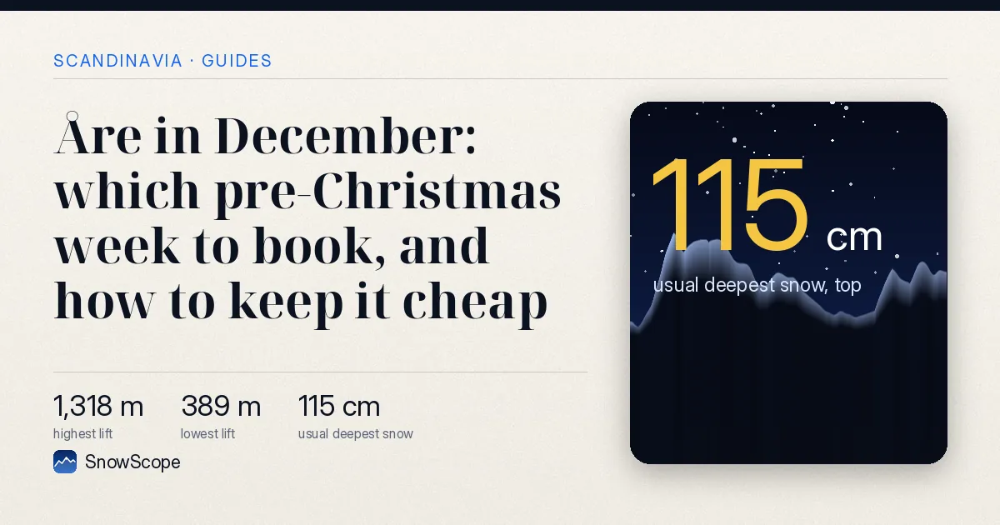

Åre in December: which pre-Christmas week to book, and how to keep it cheap
Åre sits high above the lake Åresjön with 116 km of runs and 928 m of vertical drop. The snow history from 46 winters shows one clear pattern for December: the second half of the month builds reliable cover, while the first week is a coin flip. Mid-mountain (853 m) has good snow in only 61 % of first-week Decembers, but 89 % of the time by mid-month.
See the live snow forecast for Åre in the SnowScope appSnow depth, powder alerts and the 3D map, free.
When to go: the numbers
December snow at Åre grows steadily through the month. At mid-mountain, the share of winters with 30 cm or more climbs from 61 % in 1-7 December, to 76 % in 8-14 December, then 89 % in 15-21 December and peaks at 93 % in the Christmas week itself.
The sweet spot for a budget trip is 15-21 December. You get near-Christmas snow odds without the holiday premium on lift passes and beds. A typical 15 December holds 40 cm at mid-mountain, enough to ski most runs safely.


Cost: lift passes and timing
Åre uses dynamic pricing for lift passes, set by date through the official online shop. That means quiet weeks cost less than holiday weeks. The first week of December and the days between Christmas and New Year are the most expensive; the week of 15-21 December sits in a calmer zone.
Book your accommodation and lift pass together around your chosen week, not the other way round. Early online booking for both gives you the most control over what you spend.
Height: less variation than you might expect
Åre's terrain spreads from 389 m to 1318 m, but December snow does not change as much across that range as it does in Alpine resorts. On a typical 15 December the base holds 34 cm, mid-mountain 40 cm and the summit 46 cm. The top is windier, so the extra altitude does not always mean deeper snow on the ground.
What has shifted over time is reliability at the summit. Its December average fell from 69 cm in winters from the 1980s and 90s to 36 cm in recent winters. Mid-mountain lost similar odds: the share of Christmas weeks with 30 cm dropped from 100 % to 80 %. The base has stayed steadier.
Last winter and long-term change
The 2025-26 season delivered 40 cm at mid-mountain on 15 December and 33 cm on 24 December. That was average for recent years but below the 46-winter median of 49 cm at the summit on Christmas Eve. Thin early season snow is common now.
Åre's December snow has trended lighter in the last 15 winters than in the 1980s and 90s. The mid-mountain Christmas week now has 30 cm in only 80 % of winters, down from 93 % historically. Plan for a typical mid-month week, not for deep powder.
Alternatives: Vemdalsskalet and when to look elsewhere
Vemdalsskalet, further south in Härjedalen, is a smaller, quieter option. Its December snow is thinner: 33 cm at mid-mountain on 15 December, and only 63 % of winters reach 30 cm in the week of 15-21 December. Its prices are also dynamic with no published fixed rate.
In December, Åre offers more reliable snow and far more terrain for similar pricing. If you need certainty for a fixed early-December week, look north-west toward higher Norwegian or Swedish mountains instead. From January onward, Vemdalsskalet becomes a better value.
On the mountain: wind, light and avalanches
December days are short. Plan your skiing around available light, and head to lower, sheltered runs on windy days. The summit is exposed; gusts can scour snow off the highest slopes even when the mid-mountain looks solid.
Before going off-piste, check the latest Swedish avalanche forecast from Lavinprognoser. Early-season snow can sit poorly on what lies beneath.
Tips for skiers
- Book the week of 15-21 December: 89 % of the 46 winters on record had 30 cm or more at mid-mountain that week, against only 61 % in the first week.
- Buy lift passes online and outside the holiday period (1-7 December and 24-31 December). Dynamic pricing rewards early booking on quiet dates.
- Expect mid-mountain snow around 40 cm on a typical mid-December day. The base gets less, the summit a little more, but wind can erase that difference.
- On windy days stick to the lower, sheltered terrain. The summit is exposed and snow often gets wind-scoured.
- Read the Swedish avalanche bulletin before skiing off-piste, especially early in the season when new snow sits on a weak base.
About these numbers
Resort snow depths are the deepest snow on the resort's upper slopes on the date shown; they are estimates for an area, not a measurement at one point. Forecasts can change. Always read the official avalanche bulletin before going off-piste.
Official avalanche bulletins: Lavinprognoser (Naturvårdsverket)
Cite this report
For research, teaching or the press: the numbers and charts are free to reuse under CC BY 4.0 with this citation.
SnowScope (2026), Åre in December: which pre-Christmas week to book, and how to keep it cheap, https://snowscope.app/blog/en/2026/11/are-december-skiing-sweden-price-snow.html, accessed 2026-11-14
SnowScope (Atlas Labs). (2026, November 14). Åre in December: which pre-Christmas week to book, and how to keep it cheap. SnowScope snow reports. https://snowscope.app/blog/en/2026/11/are-december-skiing-sweden-price-snow.html
BibTeX
@misc{snowscope2026aredecemberskiingswedenp,
author = {{SnowScope (Atlas Labs)}},
title = {Åre in December: which pre-Christmas week to book, and how to keep it cheap},
year = {2026},
month = nov,
howpublished = {\url{https://snowscope.app/blog/en/2026/11/are-december-skiing-sweden-price-snow.html}},
note = {Published 2026-11-14 12:34 UTC; accessed 2026-11-14}
}· CC BY 4.0 · Methods, data and tools →
Åre: snow and temperature by height, this winter vs last (tools) →
Follow Åre
Free: a message when fresh snow is coming, and the forecast every morning.
More snow reports

No snow in Bergen on 14 November: bare ground in town, 5 cm at Kvamskogen 35 km away. Heavy rain Sunday. Year-round dog rules apply.

Mid-mountain snow reaches 30 cm in 83–100 % of Decembers across Scandinavia. Fixed prices in Finland; dynamic pricing in Norway and Sweden. Data from 46 winters, 13 November 2026.

On 13 November, 133 of Sweden's 322 weather stations had snow. The deepest lay in a belt from Dalarna to Västerbotten, with Sälen at 45 cm, while the far north remained almost bare.